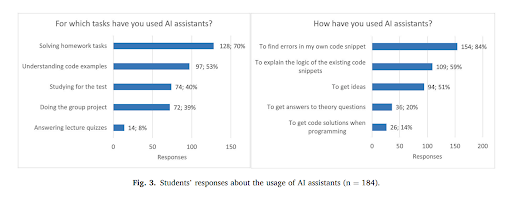
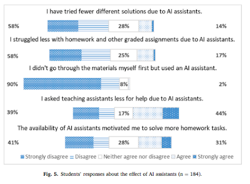

Table of contents |
|---|
| Abstract |
| Introduction |
| Analysis and discussion |
| Presentation |
| References |
Generative AI such as Copilot and ChatGPT are all tools that we are quite familiar with,
this is especially true for computer science students as they are revolutionising the process
of coding in software development. In this article I will be discussing how AI systems assist
developers by providing code snippets, providing solutions for bugs, helping with repetitive tasks
therefore reducing the development time. I will also be looking at the potential challenges like,
over reliance on AI and ethical considerations. This article will be based on recent studies that
are conducted in an educational setting, and investigates where AI has been used to support learning
and how it has been used.
When referring to generative AI in this article, we are talking about artificial intelligence systems capable
of producing content such as text, code, images, and explanations based on patterns learned from large datasets.
In programming, this can be used as a tool to read prompts and convert them into working code in languages such
as Python, Java, and C++. The most used and known examples are ChatGPT, GitHub Copilot and Amazon CodeWhisperer.
These AI systems are rapidly changing how professional programmers and computer science students approach
programming tasks. They help the user quickly fix syntax problems, understand and break down complex tasks,
and even solve simple errors faster. In higher education, AI tools are becoming more embedded in the average
student's life. Lepp and Kaimre (2025) found that almost 80% of students taking an Object Oriented Programming
module used AI tools at least once, with many of them using AI to overcome difficult problems in their programs
like confusing error messages or unclear instructions from their assignments.
In this article we examine how generative AI is used to support learning, how it is used by students, and what
some of the problems are when students become too reliant on AI based tools.
How generative AI assists programmers
Generative AI can produce code from simple instructions such as “Write me a sorting algorithm using Python”.
These AI tools use large datasets to train their algorithms, which allows them to generate multiple answers.
Developers use this to quickly get templates for a coding project or even an almost complete program. Research
shows that this can save a significant amount of time by removing the need to repeatedly write similar code
(Vaithilingam et al., 2022).
Debugging a piece of code is one of the most time consuming parts of making a project. However, AI tools can
inspect the user's code, find the errors, fix them and give an explanation. Students in the Lepp and Kaimre
(2025) study reported using AI to understand error messages, with some saying that AI “pinpoints mistakes
quickly” and explains errors better than an integrated development environment.
Learning new concepts and syntax
Programming languages have different structure and syntax rules. Some students find it hard to remember all of
the rules and syntax for the different languages required throughout their degree. AI tools can help by
explaining new rules and terminology in an easy to understand format. Lepp and Kaimre (2025) also saw that some
students used generative AI to translate Python code into Java to better understand the new syntax.
Use of generative AI in education
Educational research shows that AI tools can help with learning in programming courses. Kazemitabaar et al.
(2023) found that students who used AI made fewer syntax errors and completed tasks more efficiently. Lepp and
Kaimre (2025) added to this discussion with data that shows how students are using generative AI. As shown in
Figure 3, students mostly used AI for tasks such as debugging and completing homework assignments, with
debugging the most common use: 84% of students used AI to find errors in their code.
This data shows that while AI tools are a common support, they are mostly used to solve immediate problems
rather than to develop deeper conceptual understanding. This difference is important when it comes to
understanding the risks of making AI a normal part of everyday learning.
Challenges and risks of using generative AI
One of the biggest concerns when it comes to AI assisted programming is the potential risk of students becoming
overly dependent on it to solve questions instead of developing their own problem solving skills. Research
shows a moderate negative correlation between how often students use AI and test scores, which means that
students who are more reliant on AI usually perform worse in assessments (Lepp and Kaimre, 2025). This can be
seen in Figure 5.
In the study, 90% of students disagreed that AI caused them to skip course material, but around 44% agreed
that they asked teachers for less help when AI was available. This change in behaviour may reduce opportunities
for real understanding.
Even though AI tools base their responses on massive datasets, the answer may not always be correct. Students
often reported that AI sometimes gave them incorrect or overly complex answers or solutions that were not
covered in their course. Research also shows that some AI tools like GitHub Copilot can generate buggy code
that does not always run correctly, which can be hard for newer programmers who may not recognise these
mistakes (Dakhel et al., 2023).
Generating code using AI also raises issues with plagiarism and academic honesty. AI may reproduce structures
or solutions seen during training, so it is important that students cite AI properly where appropriate and make
sure they understand any code they submit.
Conclusion
AI tools have fundamentally changed how programmers learn how to code. Their ability to generate and explain
code makes them very powerful educational support tools. However, Lepp and Kaimre (2025) showed that overuse of
AI can hinder test scores and weaken independent problem solving skills. To avoid the negative effects of AI
tools, students should learn how to use them critically and treat them as a tool to support learning instead of
a replacement for it. With careful integration of AI, it can enhance students' computational skills and help
them become stronger programmers.

Figure 3. Students’ responses about the usage of AI assistants (n = 184), adapted from Lepp and Kaimre (2025).

Figure 5. Students’ responses about the effect of AI assistants on learning behaviour (n = 184),
adapted from Lepp and Kaimre (2025).
Kazemitabaar, M. et al. (2023) ‘Studying the effect of AI code generators on supporting novice learners’,
CHI Conference on Human Factors in Computing Systems.
Lepp, M. and Kaimre, J. (2025) ‘Does generative AI help in learning programming: Students’ perceptions,
reported use and relation to performance’, Computers in Human Behavior Reports, 18, 100642.
Dakhel, A.M. et al. (2023) ‘GitHub Copilot AI pair programmer: Asset or Liability?’, Journal of Systems
and Software, 203, 111734.
Vaithilingam, P., Carman, M. and Chen, L. (2022) ‘Is GitHub Copilot a good programmer?’, Proceedings of
the ACM Symposium on User Interface Software and Technology, pp. 1–12.